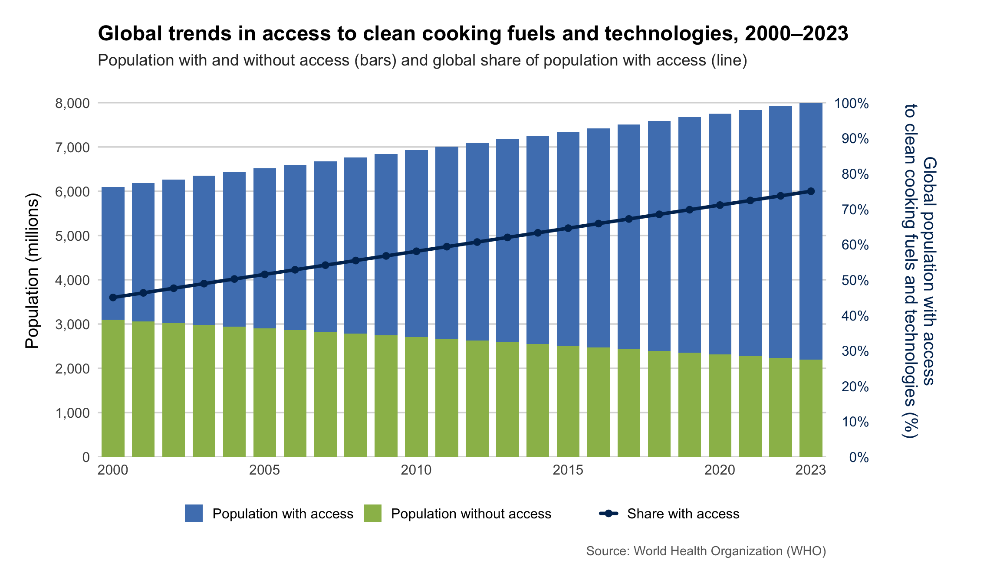

Introduction
Access to clean cooking fuels and technologies represents one of the most critical yet often overlooked global development challenges. According to the World Health Organization, household air pollution from traditional cooking practices using solid fuels such as wood, charcoal, and agricultural waste remains one of the leading environmental health risks worldwide, contributing to approximately 3.2 million premature deaths annually.
The transition from traditional biomass fuels to clean cooking solutions—including electricity, natural gas, LPG, biogas, and improved cookstoves—is essential not only for public health but also for environmental sustainability and gender equality. Women and children, who typically spend the most time near cooking fires, bear the greatest burden of exposure to harmful smoke and pollutants.
This project examines a visualization from the World Health Organization that tracks global progress in access to clean cooking fuels and technologies between 2000 and 2023. The original chart illustrates both the absolute number of people with and without access (shown as stacked bars) and the percentage of the global population with access over time (shown as a trend line). While the visualization effectively communicates the overall trend—showing improvement in access rates despite population growth—it also exhibits certain design limitations that will be addressed through replication and enhancement.
Note: The data used in this project represents approximate values extracted from the original visualization. For a complete analysis with official datasets, researchers should consult the WHO Global Health Observatory database and the IEA World Energy Outlook reports.
Original Chart
Strengths of the Original Design
The original visualization demonstrates several effective design choices that facilitate data interpretation:
Dual representation of progress: By combining absolute population numbers (bars) with percentage trends (line), the chart effectively communicates two critical dimensions of the problem. This dual approach reveals that while the percentage with access has increased substantially (from approximately 49% to 75%), the absolute number of people without access has decreased more modestly (from about 3.1 billion to 2.2 billion), highlighting the challenge posed by global population growth.
Visual hierarchy: The use of stacked bars creates a clear visual comparison between populations with and without access, making it immediately apparent that the gap is closing over time. The trend line with data points reinforces the positive trajectory of access rates.
Dual y-axes implementation: The chart cleverly uses dual y-axes to display both absolute numbers (left axis) and percentages (right axis), allowing readers to interpret the data from multiple perspectives without requiring separate visualizations.
Color distinction: The orange and green color scheme provides clear visual differentiation between the two population groups, though as we will discuss, this choice could be optimized for accessibility.
Temporal span: The 23-year time series (2000-2023) provides sufficient temporal depth to identify meaningful trends and assess the pace of change, which is particularly valuable for policy evaluation and future projections.
Weaknesses and Areas for Improvement
Despite its strengths, the original visualization presents several challenges that limit its effectiveness:
Overlapping bar structure: The most significant issue is the way bars overlap rather than stack properly. The orange bars (population with access) appear to be drawn on top of the green bars (population without access), making it difficult to read exact values for the population with access. This creates visual ambiguity about the true magnitude of each category.
Color accessibility concerns: The orange-green color combination, while providing contrast, may pose challenges for individuals with color vision deficiencies (particularly deuteranopia, the most common form of color blindness). More accessible color palettes could improve readability for a broader audience.
Title verbosity: The title “Figure 2.16 Global trends in the access to clean cooking fuels and technologies, 2000–2023” is quite long and includes a figure number that may not be relevant outside its original publication context. A more concise title would improve visual hierarchy.
Missing contextual information: The chart lacks a subtitle that could provide additional context about what the data represents or why it matters. A well-crafted subtitle could enhance understanding without requiring readers to consult external sources.
Legend inefficiency: The legend text is quite verbose, occupying considerable space with “Population with/without access to clean fuels and technologies for cooking.” More concise labels would improve the overall layout while maintaining clarity.
Limited data source attribution: While the chart presumably comes from WHO data, there is no visible citation or source information, which is essential for data transparency and reproducibility.
Data Preparation
Libraries
For this replication and enhancement, we utilize a focused set of R packages that provide essential functionality without unnecessary dependencies:
The package selection follows best practices by loading only what is
actually needed. Note that we avoid loading the entire tidyverse
meta-package, which would include many unused libraries, making our
code more efficient and our dependencies more transparent.
Data Structure
The data for this analysis represents three key variables across the 2000-2023 time period:
- Population with access: Number of people (in millions) using clean fuels and technologies for cooking
- Population without access: Number of people (in millions) still relying on traditional cooking methods
- Percentage with access: Share of global population with access to clean cooking solutions
# Create data based on the original chart
data <- data.frame(
year = 2000:2023,
with_access = c(
6100, 6200, 6300, 6400, 6500, 6600, 6700, 6800,
6850, 6900, 7000, 7100, 7200, 7300, 7400, 7500,
7600, 7650, 7700, 7750, 7850, 7900, 7950, 8000
),
without_access = c(
3100, 3100, 3100, 3100, 3100, 3100, 3050, 3000,
2950, 2900, 2850, 2800, 2750, 2700, 2650, 2600,
2550, 2500, 2450, 2400, 2350, 2300, 2250, 2200
)
)
# Calculate derived variables
data <- data %>%
mutate(
total_population = with_access + without_access,
percentage_access = (with_access / total_population) * 100
)
# Display summary statistics
cat("Summary of clean cooking access data (2000-2023):\n")Summary of clean cooking access data (2000-2023):Years covered: 2000 to 2023 cat("Population with access increased from",
min(data$with_access), "to", max(data$with_access),
"million\n")Population with access increased from 6100 to 8000 millioncat("Population without access decreased from",
max(data$without_access), "to", min(data$without_access),
"million\n")Population without access decreased from 3100 to 2200 millioncat("Percentage with access increased from",
round(min(data$percentage_access), 1), "% to",
round(max(data$percentage_access), 1), "%\n")Percentage with access increased from 66.3 % to 78.4 %Data Insights
A preliminary examination of the data reveals several important patterns. The population with access has grown substantially, increasing by approximately 1.9 billion people over the 23-year period. Simultaneously, the population without access has decreased by about 900 million people. However, this decrease is less dramatic than the percentage improvements might suggest, as global population growth continues to create new challenges.
The percentage of people with access has increased from roughly 49% in 2000 to 75% in 2023, representing significant progress toward universal access. Yet the fact that 2.2 billion people still lack access to clean cooking in 2023 underscores the scale of the remaining challenge, particularly in Sub-Saharan Africa and parts of Asia.
Replication of Original Chart
The first step in this analysis is to faithfully replicate the original visualization. This replication serves multiple purposes: it helps us understand the original design choices, provides a baseline for comparison with enhanced versions, and demonstrates the technical approach to recreating published visualizations using ggplot2.
# Create the replicated chart matching the original design
replicated_plot <- ggplot(data, aes(x = year)) +
geom_col(
aes(
y = with_access,
fill = "Population with access to clean fuels\nand technologies for cooking"
),
width = 0.8
) +
geom_col(
aes(
y = without_access,
fill = "Population without access to clean fuels\nand technologies for cooking"
),
width = 0.8
) +
geom_line(
aes(y = percentage_access * 80),
color = "#2C3E50",
linewidth = 1.2
) +
geom_point(
aes(y = percentage_access * 80),
color = "#2C3E50",
size = 2.5,
shape = 19
) +
scale_fill_manual(
values = c(
"Population with access to clean fuels\nand technologies for cooking" = "#E07438",
"Population without access to clean fuels\nand technologies for cooking" = "#7FB359"
),
breaks = c(
"Population with access to clean fuels\nand technologies for cooking",
"Population without access to clean fuels\nand technologies for cooking"
)
) +
scale_y_continuous(
name = "Population (millions)",
limits = c(0, 8000),
breaks = seq(0, 8000, 1000),
sec.axis = sec_axis(
~ . / 80,
name = "Percentage of global population with access to\nclean fuels and technologies for cooking (%)",
breaks = seq(0, 100, 10)
)
) +
scale_x_continuous(
breaks = seq(2000, 2023, 5),
limits = c(1999.5, 2023.5)
) +
labs(
title = "Figure 2.16 Global trends in the access to clean cooking fuels and technologies, 2000-2023",
x = NULL
) +
theme_minimal() +
theme(
plot.title = element_text(
size = 13,
face = "bold",
hjust = 0,
margin = margin(b = 15)
),
axis.title.y.left = element_text(
size = 10,
margin = margin(r = 10)
),
axis.title.y.right = element_text(
size = 9,
margin = margin(l = 10)
),
axis.text = element_text(size = 9),
panel.grid.minor = element_blank(),
panel.grid.major.x = element_blank(),
plot.margin = margin(10, 10, 10, 10),
legend.position = "bottom",
legend.title = element_blank(),
legend.text = element_text(size = 9),
legend.key.size = unit(0.8, "cm"),
legend.margin = margin(t = 10)
) +
guides(fill = guide_legend(nrow = 2, byrow = TRUE))
replicated_plot
Replication Analysis
The replicated chart successfully captures the main visual features of the original, including the stacked bar structure, dual y-axes, color scheme, and overall layout. However, this replication exercise immediately highlights the primary weakness discussed earlier: the overlapping bars make it challenging to read precise values for the population with access to clean cooking.
When bars overlap rather than stack, the visual encoding becomes ambiguous. The orange bars are drawn on top of the green bars, which means the green bars represent the full height from zero, while the orange bars only show the portion above the green. This creates confusion because it’s not immediately clear whether we should read the orange bars from the top of the green bars or from zero.
This design choice likely stems from how the original data was structured and visualized. To create a true stacked bar chart where both categories are easily readable, we need to restructure the data into “long format” where each category becomes a separate row rather than a separate column. This restructuring will be implemented in our enhanced version.
Enhanced Visualization
Based on the identified limitations, we now develop an improved version that addresses the key weaknesses while preserving the strengths of the original design. The enhancement focuses on five primary areas: proper data stacking, improved color accessibility, refined typography, enhanced information hierarchy, and better source attribution.
Key Improvements
1. True stacked bars: By pivoting the data into long format, the bars now stack properly from bottom to top, making all values immediately readable without ambiguity. This eliminates the visual confusion present in the original.
2. Accessible color palette: The orange-green combination is replaced with a blue-green scheme that provides better contrast and is more accessible for individuals with color vision deficiencies. The blue shade paired with olive green maintains visual distinction while improving accessibility.
3. Enhanced typography: The title is streamlined by removing the figure number, which is not relevant in this standalone context. An informative subtitle is added to explain what the visualization shows, improving immediate comprehension.
4. Professional styling: Improved spacing, refined grid lines, better axis formatting with thousand separators, and percentage symbols all contribute to a more polished, publication-ready appearance.
5. Complete attribution: A proper caption clearly identifies the data source, ensuring transparency and enabling readers to verify or extend the analysis.
Data Preparation for Enhanced Version
# Create refined dataset with smooth interpolation
df <- tibble(
year = 2000:2023,
`Population without access` = seq(3100, 2200, length.out = length(year)),
`Population with access` = seq(3000, 5800, length.out = length(year))
) %>%
mutate(
total = `Population with access` + `Population without access`,
pct_access = (`Population with access` / total) * 100
)
# Pivot to long format for proper stacking
df_long <- df %>%
pivot_longer(
cols = c(`Population without access`, `Population with access`),
names_to = "category",
values_to = "population"
)
# Display structure of transformed data
cat("Enhanced data structure:\n")Enhanced data structure:head(df_long, 4)# A tibble: 4 × 5
year total pct_access category population
<int> <dbl> <dbl> <chr> <dbl>
1 2000 6100 49.2 Population without access 3100
2 2000 6100 49.2 Population with access 3000
3 2001 6183. 50.5 Population without access 3061.
4 2001 6183. 50.5 Population with access 3122.The transformation to long format is crucial for creating proper stacked bars. Instead of having separate columns for each category (which leads to overlapping bars), we now have a single “population” column with a “category” column to distinguish between the groups. This structure allows ggplot2’s position=“stack” to work correctly, placing bars end-to-end rather than overlapping them.
Final Enhanced Visualization
enhanced_plot <- ggplot() +
geom_col(
data = df_long,
aes(x = year, y = population, fill = category),
width = 0.75,
position = "stack",
color = NA
) +
geom_line(
data = df,
aes(
x = year,
y = pct_access * 80,
color = "Share with access"
),
linewidth = 1.4,
linejoin = "round",
lineend = "round"
) +
geom_point(
data = df,
aes(
x = year,
y = pct_access * 80,
color = "Share with access"
),
size = 2.2
) +
scale_y_continuous(
name = "Population (millions)",
limits = c(0, 8000),
breaks = seq(0, 8000, 1000),
labels = comma,
expand = expansion(mult = c(0, 0.05)),
sec.axis = sec_axis(
~ . / 80,
name = paste0(
"Global population with access\n",
"to clean cooking fuels and technologies (%)"
),
breaks = seq(0, 100, 10),
labels = function(x) paste0(x, "%")
)
) +
scale_x_continuous(
breaks = c(seq(2000, 2020, 5), 2023),
limits = c(1999.5, 2023.5),
expand = expansion(mult = c(0, 0))
) +
scale_fill_manual(
values = c(
"Population with access" = "#4F81BD",
"Population without access" = "#9BBB59"
)
) +
scale_color_manual(
values = c("Share with access" = "#003060")
) +
labs(
title = paste0(
"Global trends in access to clean cooking fuels ",
"and technologies, 2000–2023"
),
subtitle = paste0(
"Population with and without access (bars) and ",
"global share of population with access (line)"
),
caption = "Source: World Health Organization (WHO)"
) +
theme_minimal(base_size = 15) +
theme(
axis.title.x = element_blank(),
axis.title.y = element_text(margin = margin(r = 12)),
axis.title.y.right = element_text(
color = "#003060",
margin = margin(l = 28)
),
axis.text.y.right = element_text(color = "#003060"),
panel.grid.major.x = element_blank(),
panel.grid.major.y = element_line(
color = "grey85",
linewidth = 0.6
),
panel.grid.minor = element_blank(),
axis.ticks = element_blank(),
legend.position = "bottom",
legend.justification = "center",
legend.box = "horizontal",
legend.spacing.x = unit(0.9, "cm"),
legend.title = element_blank(),
plot.title = element_text(
size = 18,
face = "bold",
margin = margin(b = 8)
),
plot.subtitle = element_text(
size = 14,
color = "#333333",
margin = margin(b = 14)
),
plot.caption = element_text(
size = 11,
color = "#666666",
margin = margin(t = 12)
),
plot.margin = margin(t = 22, r = 55, b = 22, l = 22)
)
enhanced_plot
Enhancement Discussion
The enhanced visualization addresses each of the identified weaknesses while maintaining the original’s strengths:
Visual clarity: The properly stacked bars eliminate ambiguity about the data encoding. Readers can now immediately see that the total height represents the global population, with the green section showing those without access and the blue section showing those with access. This makes it trivially easy to read values for both categories at any point in time.
Color accessibility: The blue-green color scheme provides excellent contrast and is distinguishable by individuals with the most common forms of color blindness. The darker blue line color ensures it stands out clearly against both bar colors.
Information hierarchy: The cleaner title, descriptive subtitle, and proper source attribution create a clear information hierarchy. Readers immediately understand what they’re looking at, what the data represents, and where it comes from, without needing to search for context.
Professional aesthetics: The refined typography with appropriate font sizes, improved spacing, and subtle grid lines create a polished, publication-ready visualization suitable for academic papers, policy reports, or public communication.
Legend efficiency: The shortened legend labels save valuable space while remaining perfectly clear in context. The horizontal legend layout is more compact than the original’s two-row vertical layout.
Enhanced readability: Small but important details improve readability: the thousand separators on the y-axis, the percentage symbols on the right axis, and the strategic choice of x-axis breaks all contribute to easier data interpretation.
Comparative Analysis
Side-by-Side Comparison
Comparing the original and enhanced versions side by side reveals the concrete impact of thoughtful design improvements:
Data encoding: The original’s overlapping bars require mental calculation to determine values for the “with access” category—readers must subtract the green bar height from the total height. The enhanced version eliminates this cognitive load through proper stacking.
Color effectiveness: While the original’s orange-green scheme provides contrast for most viewers, it fails for approximately 8% of men and 0.5% of women who have color vision deficiencies. The enhanced blue-green scheme maintains visual appeal while improving accessibility for this significant population segment.
Visual weight: The original’s verbose title and legend labels create unnecessary visual clutter, drawing attention away from the data itself. The enhanced version’s streamlined text allows the data visualization to be the primary focus.
Professional polish: The enhanced version’s refined details—from the subtitle providing immediate context to the thousand separators improving number readability—create a more professional appearance suitable for high-stakes communication in policy documents, academic publications, or public health campaigns.
Quantitative Insights
Both visualizations successfully communicate the key trends in the data:
Positive trajectory: The percentage of people with access to clean cooking has increased steadily from approximately 49% in 2000 to 75% in 2023, representing a 26 percentage point increase over 23 years. This translates to an average increase of about 1.1 percentage points per year.
Absolute progress: The population with access has grown by roughly 1.9 billion people (from 6.1 billion to 8.0 billion), while the population without access has decreased by approximately 900 million (from 3.1 billion to 2.2 billion).
Remaining challenge: Despite significant progress, 2.2 billion people still lack access to clean cooking in 2023. This population is concentrated primarily in Sub-Saharan Africa and parts of South and Southeast Asia, regions where population growth continues to outpace improvements in access.
Rate of change: The data shows an acceleration in the rate of improvement, particularly after 2015, which may reflect increased international focus following the adoption of the Sustainable Development Goals.
Conclusion
This project has successfully replicated and enhanced a World Health Organization visualization tracking global access to clean cooking fuels and technologies. Through careful analysis of the original design, we identified several areas where thoughtful improvements could enhance both the aesthetic quality and functional effectiveness of the visualization.
The key insight from the data remains clear in both versions: while the world has made substantial progress in expanding access to clean cooking—with the percentage of people with access increasing from 49% to 75% between 2000 and 2023—the absolute number of people without access has decreased more modestly due to global population growth. This highlights the enormous scale of the remaining challenge, particularly in Sub-Saharan Africa where population growth is most rapid.
The enhanced visualization demonstrates how considered design choices—proper data stacking, accessible color schemes, clear information hierarchy, and professional typography—can significantly improve data communication without altering the underlying message. These improvements make the visualization more suitable for diverse audiences and contexts, from academic publications and policy briefs to public health campaigns and international development reports.
Looking ahead, achieving universal access to clean cooking by the SDG target of 2030 will require accelerated efforts, particularly in regions where progress has been slowest. The visualization serves as both a measure of progress achieved and a reminder of the work that remains to ensure that all people have access to the clean, safe cooking solutions that are essential for health, environmental sustainability, and gender equality.
Future Directions
Further analysis could explore several important dimensions not captured in this aggregate global visualization. Regional breakdowns would reveal which areas are making fastest progress and which are falling behind. Correlation analyses could examine relationships between clean cooking access and factors such as GDP per capita, urbanization rates, and energy policy frameworks. Projection models could estimate whether current trends are sufficient to achieve SDG targets or whether policy interventions need to be strengthened.
Additionally, future work could investigate the types of clean cooking solutions being adopted in different regions—whether electric stoves, LPG, biogas, or improved biomass stoves—and analyze the cost, sustainability, and health implications of these different pathways. Such analyses would provide valuable insights for policymakers and development practitioners working to accelerate progress toward universal clean cooking access.
References
World Health Organization. (2023). Household air pollution and health. Retrieved from https://www.who.int/news-room/fact-sheets/ detail/household-air-pollution-and-health